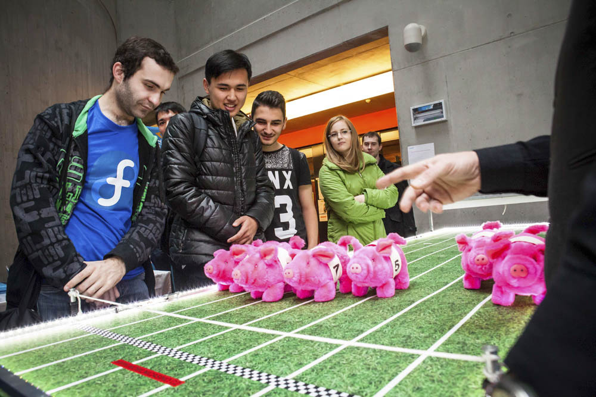
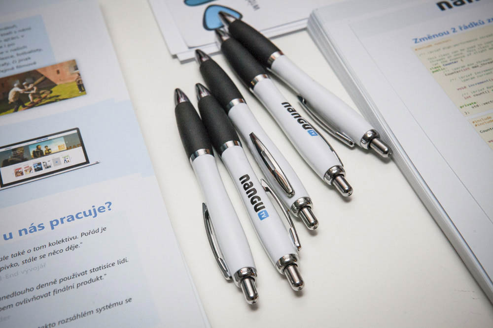
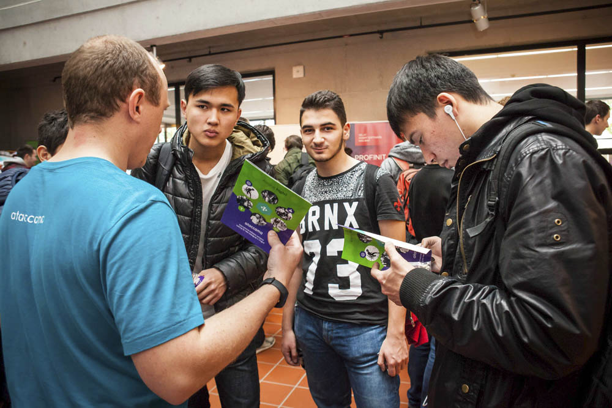
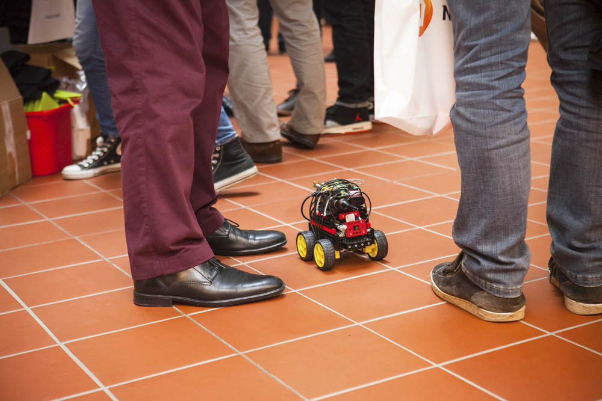
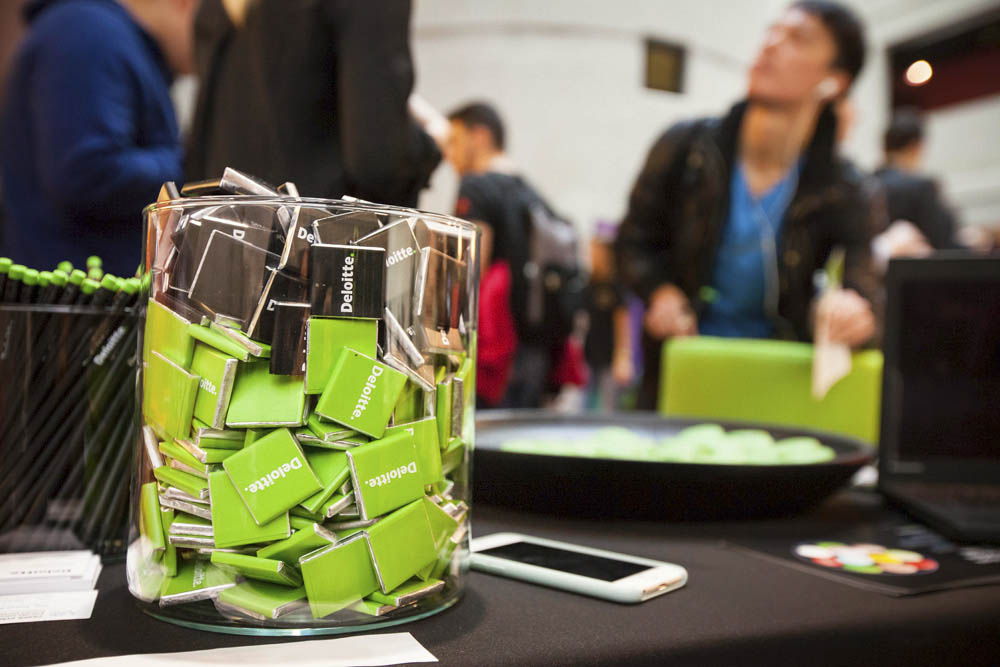
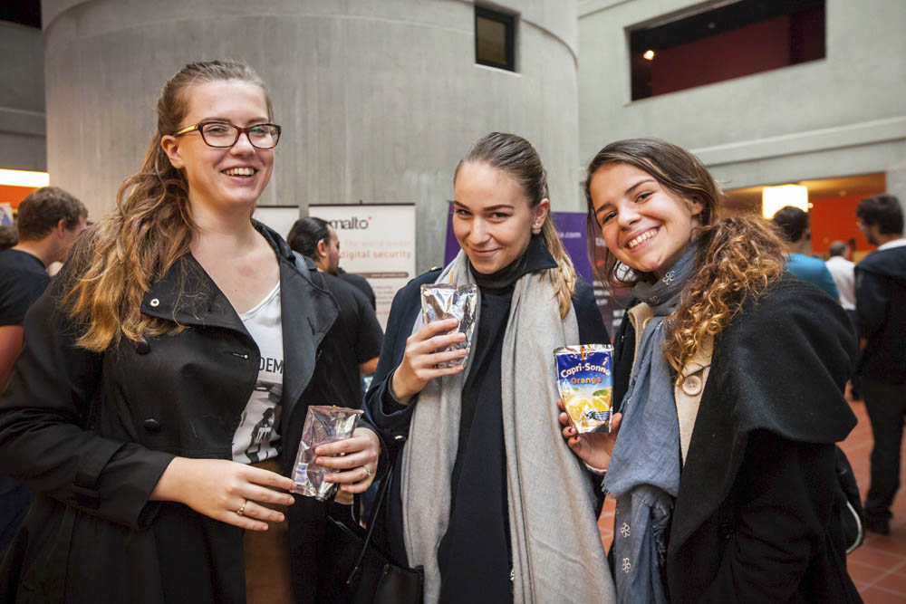
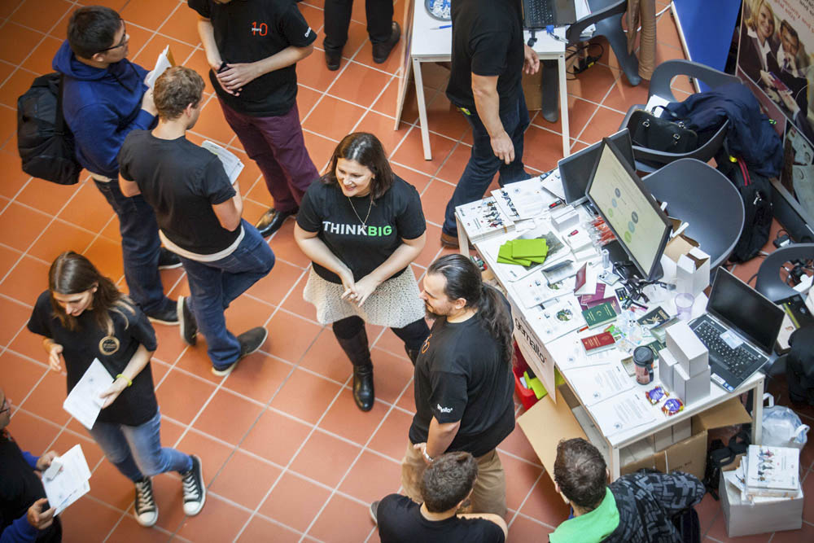
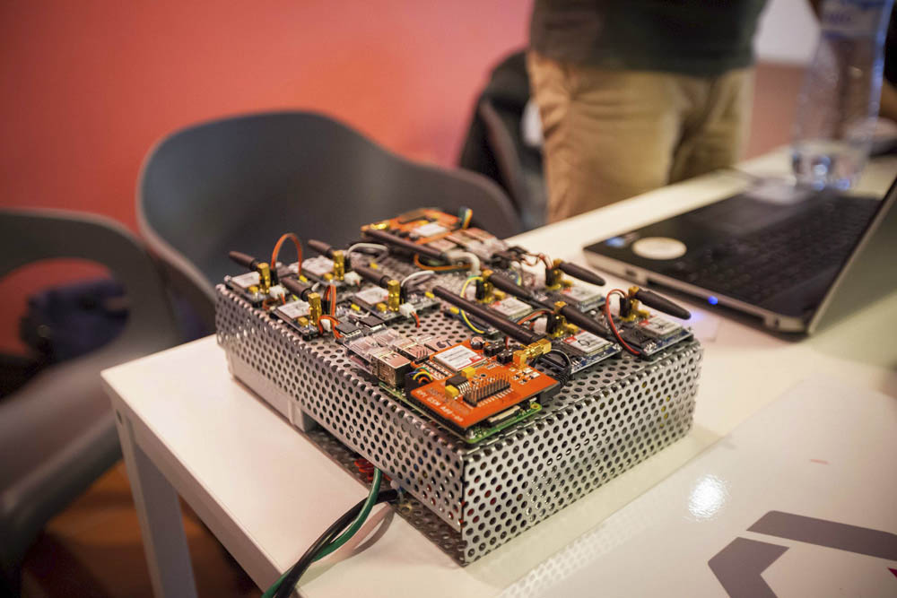
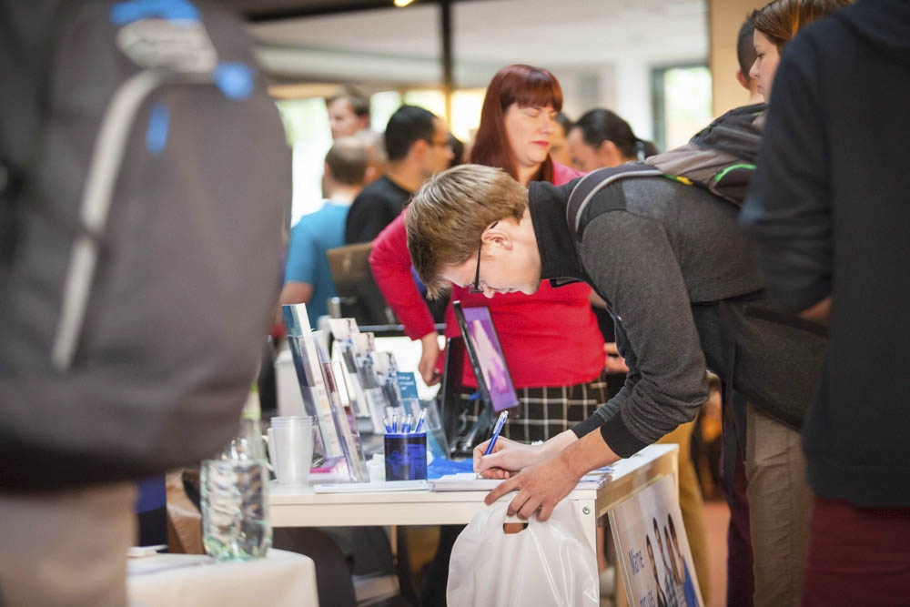
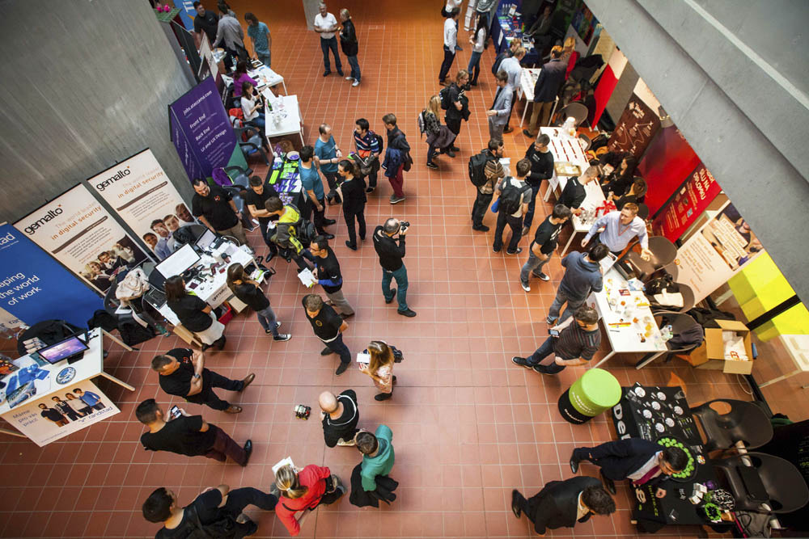

O Co@FITu
Fakulta informačních technologií pořádá pro své studenty kariérní veletrh Co@FIT (Companies at FIT). Cílem je zprostředkovat studentům kontakt s průmyslem, zejména s dlouhodobými partnery FITu.
Kariérní veletrh Co@FIT pro vás přináší portál Spolupráce s průmyslem (SSP) společně s firmami již po šesté. V letním semestru 2016/2017 se akce uskuteční v prostorách Fakulty informačních technologií. V atriu Nové budovy bude připraven informační kiosek portálu SSP, kde budou v průběhu poskytovány informace o portálu SSP a Co@FITu. Budou zde také rozmístěny kiosky firem s jejich zástupci, kde se mohou studenti dozvědět více o oblastech působení firem, používaných technologií a možnostech spolupráce. Dále si mohou zajistit semestrální a diplomové práce ve spolupráci s firmou tak, aby je zároveň mohli díky portálu SSP uplatnit i ve svém studiu. Studentům se tak nabízí jedinečná šance k navázání kontaktu a komunikaci s firmami. Akce je doporučena pro studenty všech ročníků a oborů FIT. Závěrem proběhne přednáška zlatých a stříbrných partnerů, jejíž součástí je FIT-tombola.
Galerie z minulých ročníků


- 
- 
- 
- 
- 
- 
- 
- 
- 
- 
Průmyslový partner
I pro tento akademický rok pořádáme akci Co@FIT. Existuje několik způsobů, jak můžete spolupracovat s Fakultou informačních technologií ČVUT. Využijte naší nabídky prezentovat na Co@FITu svoji firmu a oslovit tak studenty s nabídkami spolupráce, stáží, zadání do portálu SSP nebo zadání semestrálních a diplomových prací. Možnost prezentace nabízíme za poplatek i nepartnerským firmám, více informací zde. Exkluzivní možnost prezentace na přednášce mají pouze naši zlatí a stříbrní partneři.
Otázky a odpovědi ke Co@FITu
Mám zájem zúčastnit se příští akce Co@FIT
Pokud máte zájem zúčastnit se příštího Co@FITu, který se uskuteční v březnu 2017, kontaktujte Ing. Lucii Kolomazníkovou.
Partnerství a sponzoring
Naše fakulta se snaží vychovávat špičkové odborníky přispívající ke zvýšení konkurenceschopnosti a inovačního potenciálu podniků a institucí zejména v ČR. Systematicky také budujeme vědeckovýzkumné kapacity, které nám umožňují předávat studentům nejnovější poznatky, ale i nabízet expertní konzultace a realizovat projekty ve spolupráci s podniky a institucemi.
Silné a dlouhodobé vazby s průmyslovými partnery patří k historické tradici ČVUT. Na Fakultě informačních technologií se snažíme, aby byla spolupráce aplikační sféry s fakultou oboustranně přínosná. Průmysloví partneři pro nás nejsou jen cílovým působištěm našich absolventů, ale také důležitým hráčem při formování studijních programů a směrování výzkumných aktivit. Abychom zlepšili a systematizovali způsob spolupráce, připravili jsme partnerský program. Tento program umožňuje firmám a institucím jednak ovlivnit zaměření našich studentů a přímo se tak podílet na formování absolventů, ale také úzce spolupracovat na výzkumu a jeho aplikaci. Program má různé formy partnerství rozdělených podle angažovanosti ve spolupráci s fakultou.
Partneři a sponzoři
Portál Spolupráce s průmyslem
Cílem portálu Spolupráce s průmyslem (SSP) je umožnit efektivní a všestranně prospěšnou spolupráci průmyslových partnerů se studenty Fakulty informačních technologií ČVUT.
Mnoho studentů během studia pracuje, čímž získává potřebnou praxi. Stinnou stránkou je, že jejich práce většinou není nijak provázána s výukou, přestože se mnohdy vyučovaných předmětů úzce týká. SSP umožňuje realizovat projektovou výuku a diplomové práce ve spolupráci s firmami tak, aby byly výstupy přímo použitelné zadávající firmou a zároveň započítané do souvisejících předmětů ve škole. Díky našemu portálu SSP se mohou studenti podílet již při studiu na zajímavých projektech z praxe, rozvíjet svoje dovednosti a postupně si osvojovat technologie a postupy využívané v praxi. Firmy si mohou na univerzitě najít podporu při řešení složitých problémů a formovat své budoucí zaměstnance.
Rádi bychom tak podporovali zajímavé projekty a vytvořili příjemné prostředí, ve kterém budeme společně pracovat na tom, aby se nejnovější poznatky proměnily v konkrétní inovace. Fakultě dává tento systém silnou zpětnou vazbu, které využívá ke zlepšování praktických částí předmětů.
Mezi výhody, které SSP přináší průmyslovému partnerovi (firmě), patří zejména možnost spolupráce s mladými talenty a formování jejich budoucího vývoje a zaměření, využívání zkušeností univerzitních expertů a učitelů při řešení úloh, vývoj a testování, zadávání semestrálních a diplomových prací. Studentům naopak zprostředkuje kontakt a spolupráci s firmami, možnost získat praxi v oboru, účastnit se zajímavých projektů a splnit si zároveň úlohy v rámci výuky.
Kontakty
Referentka
Ing. Lucie Kolomazníková
Telefon:
+420 224 359 834
Proděkan pro rozvoj
Ing. Pavel Kordík, Ph.D.
Email:
pavel.kordik@fit.cvut.cz
Telefon:
+420 224 359 815
Adresa
Fakulta informačních technologií
České vysoké učení technické v Praze
Thákurova 9
160 00, Praha 6 - Dejvice